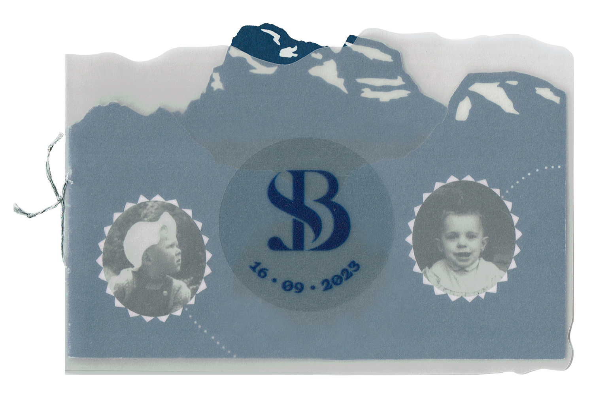
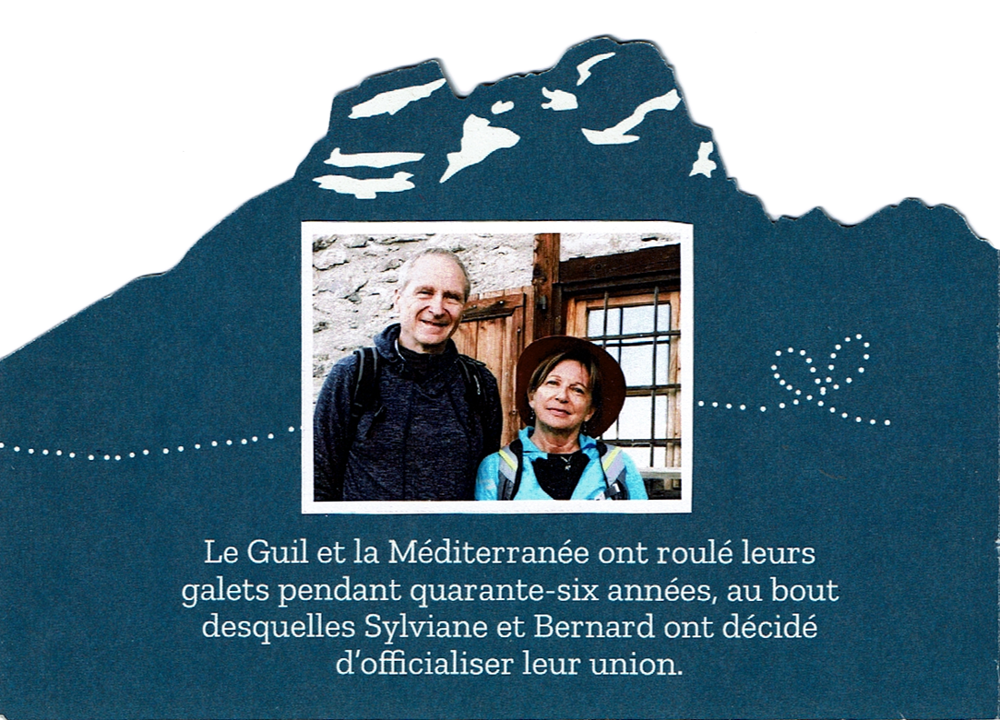

<section class="notice-section">
  <H1>The wonderful faire-part</H1>

  <div class="section__notice">

    <button class="section__notice--prev-btn notice-btn"> << </button>

    <div class="section__notice-gallery">
      <div class="section__notice-gallery--container1 section__notice-image-container hidden">
        
      </div>
      <div class="section__notice-gallery--container2 section__notice-image-container ">
        
        
      </div>
      <div class="section__notice-gallery--container3 section__notice-image-container hidden">
        
        
      </div>
    </div>

    <button class="section__notice--next-btn notice-btn next"> >> </button>


  </div>
</section>
